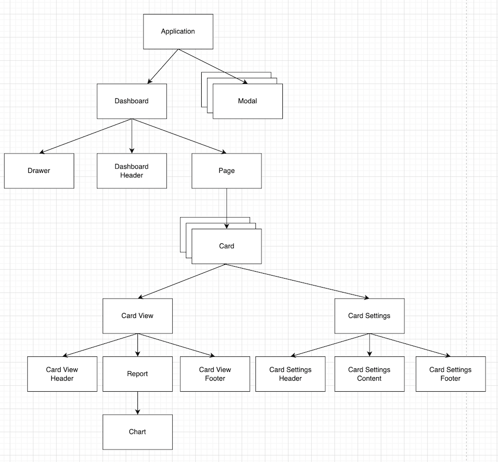

|
This documentation pertains to the (legacy) unsupported version of NeoDash. For users of the supported NeoDash offering, refer to NeoDash commercial. |
Component Overview
|
This documentation pertains to the (legacy) unsupported version of NeoDash. For users of the supported NeoDash offering, refer to NeoDash commercial. |
The image below contains a high-level overview of the component hierarchy within the application. The following conceptual building blocks are used to create the interface:

-
Application - highest level in the component structure. Handles all application-level logic (e.g. initalizing the app).
-
Modals - all pop-up windows used by the tool. (Connection modal, save-dashboard modal, errors/warnings, etc.)
-
Drawer - the sidebar on the left side of the screen. Contains buttons to perform application-level actions.
-
The Dashboard - Main dashboard component. Renders components dynamically based on the current state.
-
Dashboard Header - the textbox at the top of the screen that lets you set a title for the dashboard, plus the page selector.
-
Pages - a dashboard has one or more pages, each of which can have a list of cards.
-
Cards - a `block' inside a dashboard. Each card contains a `view' window, and a `settings' window.
-
Card View - the front of the card containing the selected report.
-
Card Settings - the back of the card, containing the cypher editor and advanced settings for the report.
-
Card View Header - the header of the card, containing a text box that acts as the name of the report.
-
Report - the component inside the card view that handles query execution and result parsing. Contains a single chart (visualization)
-
Card View Footer - The footer of the card view. Depending on the type, contains several `selectors' that modify the visualization.
-
Card Settings Header - Header of the card settings, used for moving/deleting the card.
-
Card Settings Content - the component containing the main content of the report. This is most often the Cypher query editor.
-
Card Settings Footer - the `footer' of the card. This contains the `advanced settings' window for reports.
-
Charts - the different visualizations used by the application: bar charts, tables, graphs, etc.
A note on Cards v.s. Reports
Whereas a user might associate a Card in NeoDash to a report directly, the application has a more nuanced seggration of responsibilities:
-
The Card is responsible for positioning the component in a page.
-
The Card Content is the core element of the card (exclusive of the title header and any optional footer).
-
A Report sits inside the card content, and handles the running of queries and displaying errors.
-
A Chart is rendered by the report and is solely responsible for rendering a specific visualization.